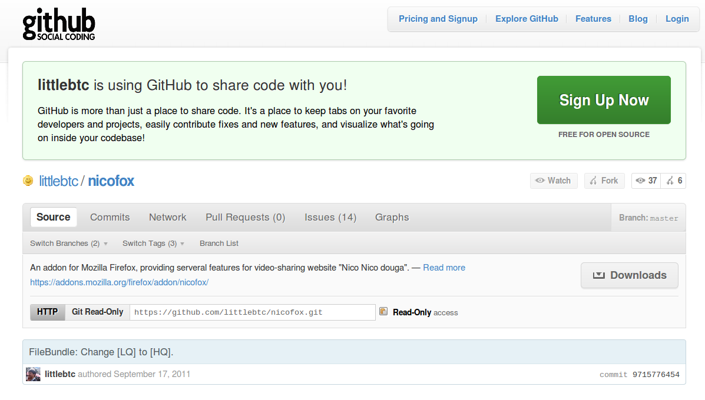

感謝您對「自由軟體鑄造場」的支持與愛護，十多年來「自由軟體鑄造場」受中央研究院支持，並在資訊科學研究所以及資訊科技創新研究中心執行，現已完成階段性的任務。 本網站預計持續維運至 2021年底，網站內容基本上不會再更動。
也紀念我們永遠的朋友 李士傑先生（Shih-Chieh Ilya Li）。
也紀念我們永遠的朋友 李士傑先生（Shih-Chieh Ilya Li）。
NicoFox：一個已經三年的小小開源專案
Created at Tuesday, 27 September 2011 00:00 Last Updated on Friday, 18 November 2011 09:48
2008 年的夏天，有個大學生在自己的宿舍裡，一邊熬夜一邊研究 Firefox 套件開發的文件，想要在幾個月之內寫出一個下載「NICONICO 動畫」上影片的工具—這就是現在的 NicoFox 誕生的源起。NicoFox 是由我開發的專案，轉眼之間，這個套件從初次釋出的 2008 年 9 月 17 日至今，已經三年了！
NICONICO 動畫是日本第二大的影片分享網站，廣受日本動漫遊戲愛好者族群所喜歡。其特色是留言會直接覆蓋在影片上面，以字幕或跑馬燈的形式呈現，因此觀看留言成為在該網站瀏覽影片上的一大樂趣。也因此逐漸有了同時保存影片與留言的工具出現，在 2008 年時最流行的工具是日本人開發的獨立瀏覽器 BOON-SUTAZIO，可以將影片與留言的 XML 檔案一同下載後，使用其內建的撥放器，將下載的影片連同留言一同在本機播放。
然而獨立瀏覽器 BOON-SUTAZIO 在 2008 年夏天突然停止開發與釋出，引起了眾人的討論。當時很喜歡在 NICONICO 動畫上觀看影片，也同時是 Firefox 忠實使用者的我，開始思考在 Firefox 上利用擴充套件重新實現 BOON-SUTAZIO 大部分功能的想法。在經過了將近一個月的摸索之後，在 2008 年 9 月 17 號完成了可以下載影片與留言的 0.1 版，並且搶到了 Mozilla 附加元件網站上 8888 的號碼，將原始碼以 GPL 授權方式釋出。
但隨後的開發過程遠比想像中辛苦：為了寫出一個好用而且不需要其他插件就能使用的播放器，首先要利用 Flex SDK 寫出一個 SWF，讓瀏覽器透過 Flash 播放影片。再來要研究 NICONICO 動畫播放留言的方式，將大部分的留言都以正確的位置、顏色、大小呈現。這些東西光是做到大致完成就花了兩三個月，隨後更花了超過半年時間去做效能與錯誤的調整。

▲ 圖1：NicoFox 專案開發首頁
隨後由於自己的生活重心轉移，加上原有的原始碼仍在進行大幅度的重構和效能調節，NicoFox 有一段不短的時間一直沒有新版本。一直到 Firefox 4 即將推出之際，才決定推出重寫的新版本，並因應 Firefox 4 的重大介面更改，重新設計了面板式的新介面、並將縮圖放在影片列表之中。在經過好幾個月的努力之後，今年夏天重新在 Mozilla 附加元件網站放上了一度因為未過審核而下架的 NicoFox。如今的最新版本是 0.8。
NicoFox 除了下載影片和留言的功能以外，也包含了很多面向使用者的貼心設計：攔截 NICONICO 動畫每小時的強迫報時；在遭遇低畫質模式時進行自動預約，到深夜有原始畫質模式檔案再下載影片；指定自訂的外部播放器。功能完整而使用容易，每日使用者達到五萬人。
▲ 圖2：NicoFox 的相關使用數據
NicoFox 套件所有原始碼都以 GPL 方式釋出，雖然還沒有人進行 Fork 或 Patch，但我期待未來這個套件能逐漸轉為協作開發模式，或著在我無法維護後有人繼續扛下來。我在三年前撰寫這個套件時的期望是「他是一個能讓你看 NICONICO 更開心的套件」，而我也覺得我做到了一部分，未來也希望能夠開心地繼續撰寫下去。
如果您想了解 NicoFox，可以到 小B 的網站上閱讀使用說明。
相關網址
1. NicoFox 在 Mozilla 的下載頁面
https://addons.mozilla.org/zh-TW/firefox/addon/nicofox/
2. NicoFox 在 GitHub 的專案頁面
https://github.com/littlebtc/nicofox
3. 2011 MozTW SFD Party，小B 介紹 NicoFox 的投影片
https://dl.dropbox.com/u/8093476/moztw/sfd11/nicofox.html
Special


Open Source Software Foundry‧ Best Viewed with IE7.0 or Firefox2.0 above, 1024x768 Resolution. E-Mail：contact@openfoundry.org
Address：No.128, Sec.2, Academia Rd., Institute of Information Science, Academia Sinica, Nangang District, Taipei City 11529, Taiwan (R.O.C).
Privacy Policy. Terms-of-use
Address：No.128, Sec.2, Academia Rd., Institute of Information Science, Academia Sinica, Nangang District, Taipei City 11529, Taiwan (R.O.C).
Privacy Policy. Terms-of-use